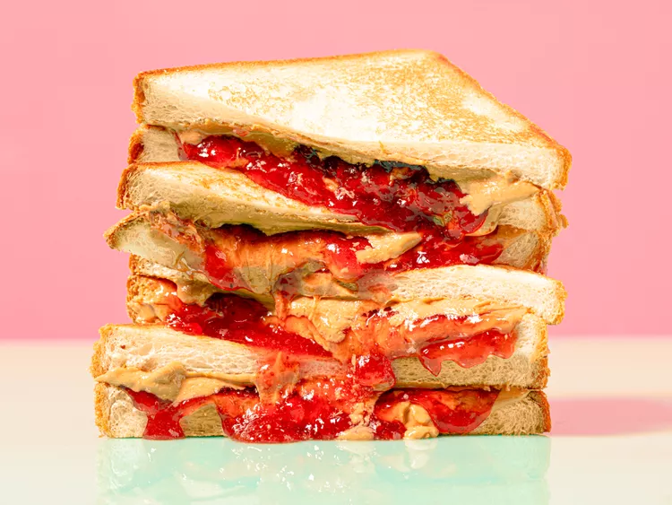

PB&J sandwich:
This is probably the worlds most researched and developed sandwich, I have scoured the internet to find perhaps the best sandwich recipie that anyone can make, please let me know what you think and how this recipie turns out for you.
Ingredients
- White Bread
- Toaster
- Jam
- Peanut Butter
- Bread knife
Instructions
- Take two slices of bread out of the bag.
- Open both jars of Peanut Butter and Jam.
- Pop both pieces of toast in the toaster and cook to your personal crispyness and darkness.
- Once toast is popped out of the toaster, carefully pull it out of the toaster and put it on a working surface, like a plate or cutting board.
- Take the knife and dip it in the Peanut Butter, spread evenly and completely on one of the slices of bread.
- Repeat the last step with the other slice, but this time dip the knife in the jam and spread it evenly across the other slice of bread.
- Once both slices of bread are evenly spread with the peanutbutter and jam combine both sides together and enjoy.
- Optional feel free to cut sandwich in whatever shape is preffered.